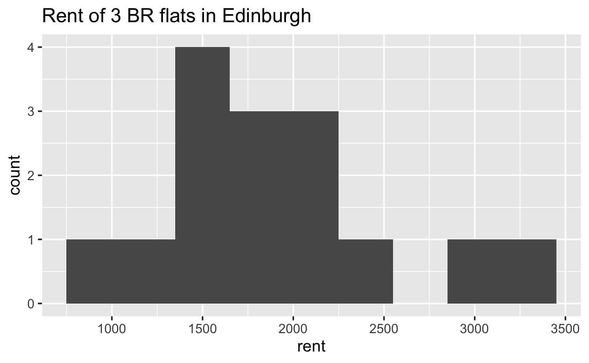
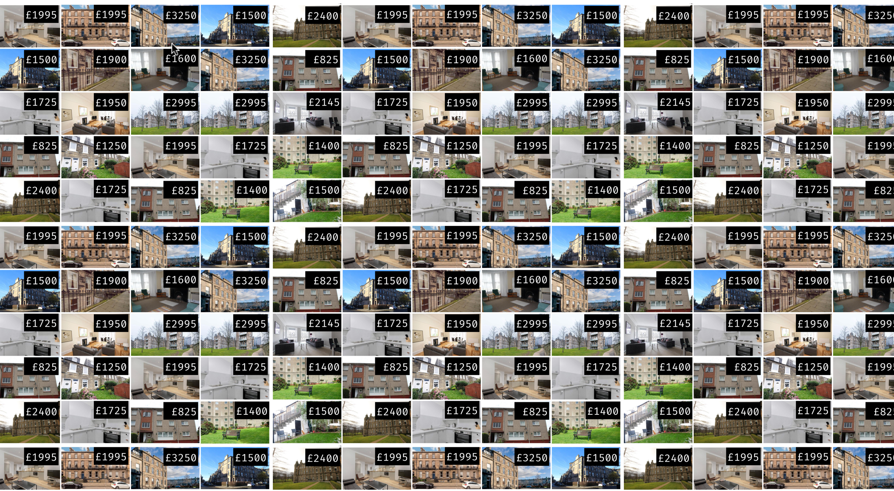
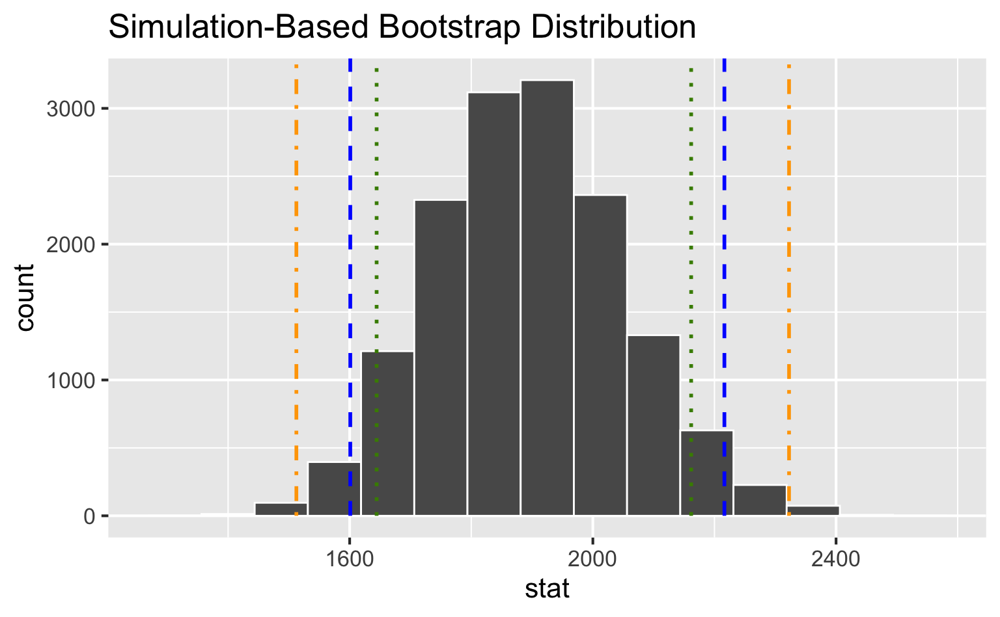

Bootstrapping
Modeling and inference
Setup
Packages
- tidyverse for data wrangling and visualization
- tidymodels for modeling
Data: Rent in Edinburgh
Fifteen 3 bedroom flats in Edinburgh, Scotland were randomly selected on rightmove.co.uk.
flat_id; rent; title; address
flat_01; 825 ; 3 bedroom apartment to rent; Burnhead Grove, Edinburgh, Midlothian, EH16
flat_02; 2400; 3 bedroom flat to rent; Simpson Loan, Quartermile, Edinburgh, EH3
flat_03; 1900; 3 bedroom flat to rent; FETTES ROW, NEW TOWN, EH3 6SE
flat_04; 1500; 3 bedroom apartment to rent; Eyre Crescent, Edinburgh, Midlothian
flat_05; 3250; 3 bedroom flat to rent; Walker Street, Edinburgh
flat_06; 2145; 3 bedroom flat to rent; George Street, City Centre, Edinburgh, EH2
flat_07; 1500; 3 bedroom flat to rent; Waverley Place , Edinburgh EH7 5SA
flat_08; 1950; 3 bedroom flat to rent; Drumsheugh Place, Edinburgh
flat_09; 1725; 3 bedroom flat to rent; Crighton Place, Leith, Edinburgh, EH7
flat_10; 2995; 3 bedroom flat to rent; Simpson Loan, Meadows, Edinburgh, EH3
flat_11; 1400; 3 bedroom flat to rent; 42, Learmonth Court, Edinburgh EH4 1PD
flat_12; 1995; 3 bedroom apartment to rent; Chester Street, Edinburgh, Midlothian
flat_13; 1250; 3 bedroom duplex to rent; Elmwood Terrace, Lochend, Edinburgh, EH6
flat_14; 1995; 3 bedroom apartment to rent; Great King Street, Edinburgh, EH3
flat_15; 1600; 3 bedroom ground floor flat to rent; Roseneath Terrace,Edinburgh,EH9Load data
# A tibble: 15 × 4
flat_id rent title address
<chr> <dbl> <chr> <chr>
1 flat_01 825 3 bedroom apartment to rent Burnhe…
2 flat_02 2400 3 bedroom flat to rent Simpso…
3 flat_03 1900 3 bedroom flat to rent FETTES…
4 flat_04 1500 3 bedroom apartment to rent Eyre C…
5 flat_05 3250 3 bedroom flat to rent Walker…
6 flat_06 2145 3 bedroom flat to rent George…
7 flat_07 1500 3 bedroom flat to rent Waverl…
8 flat_08 1950 3 bedroom flat to rent Drumsh…
9 flat_09 1725 3 bedroom flat to rent Cright…
10 flat_10 2995 3 bedroom flat to rent Simpso…
11 flat_11 1400 3 bedroom flat to rent 42, Le…
12 flat_12 1995 3 bedroom apartment to rent Cheste…
13 flat_13 1250 3 bedroom duplex to rent Elmwoo…
14 flat_14 1995 3 bedroom apartment to rent Great …
15 flat_15 1600 3 bedroom ground floor flat to rent Rosene…Observed sample

Observed sample
Sample mean ≈ £1895

Bootstrap population
Generated assuming there are more flats like the ones in the observed sample… Population mean = ?

Bootstrapping scheme
- Take a bootstrap sample - a random sample taken with replacement from the original sample, of the same size as the original sample
- Calculate the bootstrap statistic - a statistic such as mean, median, proportion, slope, etc. computed on the bootstrap samples
- Repeat steps (1) and (2) many times to create a bootstrap distribution - a distribution of bootstrap statistics
- Calculate the bounds of the XX% confidence interval as the middle XX% of the bootstrap distribution
Bootstrapping with tidymodels
Set a seed
Specify the variable of interest
Generate 15000 bootstrap samples
Response: rent (numeric)
# A tibble: 225,000 × 2
# Groups: replicate [15,000]
replicate rent
<int> <dbl>
1 1 1995
2 1 1900
3 1 2995
4 1 1995
5 1 1950
6 1 2995
7 1 1250
8 1 1400
9 1 1950
10 1 2400
# ℹ 224,990 more rowsCalculate the mean of each bootstrap sample
set.seed(12345)
edi_3br |>
specify(response = rent) |>
generate(reps = 15000, type = "bootstrap") |>
calculate(stat = "mean")Response: rent (numeric)
# A tibble: 15,000 × 2
replicate stat
<int> <dbl>
1 1 2001
2 2 1886
3 3 1799.
4 4 1968.
5 5 1789
6 6 2018
7 7 1995.
8 8 1867.
9 9 2042
10 10 1776.
# ℹ 14,990 more rowsSave resulting bootstrap distribution
The bootstrap sample
How many observations are there in boot_df? What does each observation represent?
Visualize the bootstrap distribution
Calculate the confidence interval
A 95% confidence interval is bounded by the middle 95% of the bootstrap distribution.
Visualize the confidence interval
Interpret the confidence interval
The 95% confidence interval for the mean rent of three bedroom flats in Edinburgh was calculated as (1601, 2216). Which of the following is the correct interpretation of this interval?
(a) 95% of the time the mean rent of three bedroom flats in this sample is between £1601 and £2216.
(b) 95% of all three bedroom flats in Edinburgh have rents between £1601 and £2216.
(c) We are 95% confident that the mean rent of all three bedroom flats is between £1601 and £2216.
(d) We are 95% confident that the mean rent of three bedroom flats in this sample is between £1601 and £2216.
Accuracy vs. precision
Confidence level
We are 95% confident that …
- Suppose we took many samples from the original population and built a 95% confidence interval based on each sample.
- Then about 95% of those intervals would contain the true population parameter.
Commonly used confidence levels
Which line (orange dash/dot, blue dash, green dot) represents which confidence level?

Precision vs. accuracy
If we want to be very certain that we capture the population parameter, should we use a wider or a narrower interval? What drawbacks are associated with using a wider interval?

How can we get best of both worlds – high precision and high accuracy?
Changing confidence level
How would you modify the following code to calculate a 90% confidence interval? How would you modify it for a 99% confidence interval?
Changing confidence level
How would you modify the following code to calculate a 90% confidence interval? How would you modify it for a 99% confidence interval?
Changing confidence level
How would you modify the following code to calculate a 90% confidence interval? How would you modify it for a 99% confidence interval?
Recap
Sample statistic \(\ne\) population parameter, but if the sample is good, it can be a good estimate
We report the estimate with a confidence interval, and the width of this interval depends on the variability of sample statistics from different samples from the population
Since we can’t continue sampling from the population, we bootstrap from the one sample we have to estimate sampling variability
-
We can do this for any sample statistic:
- For a mean:
calculate(stat = "mean") - For a median:
calculate(stat = "median") - … and so on
- For a mean: